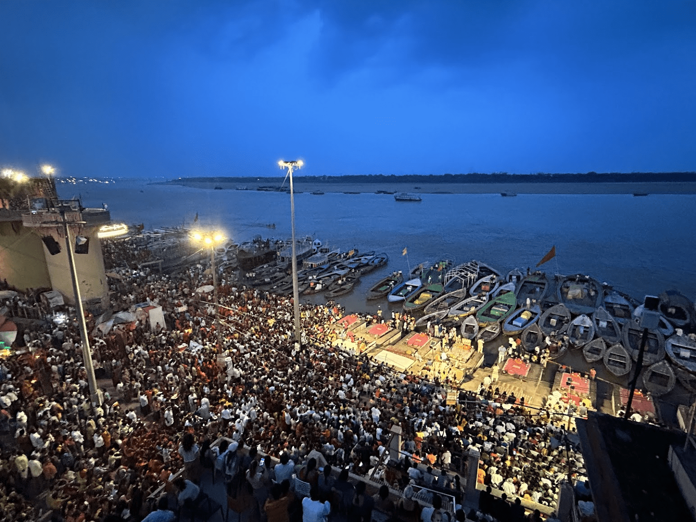
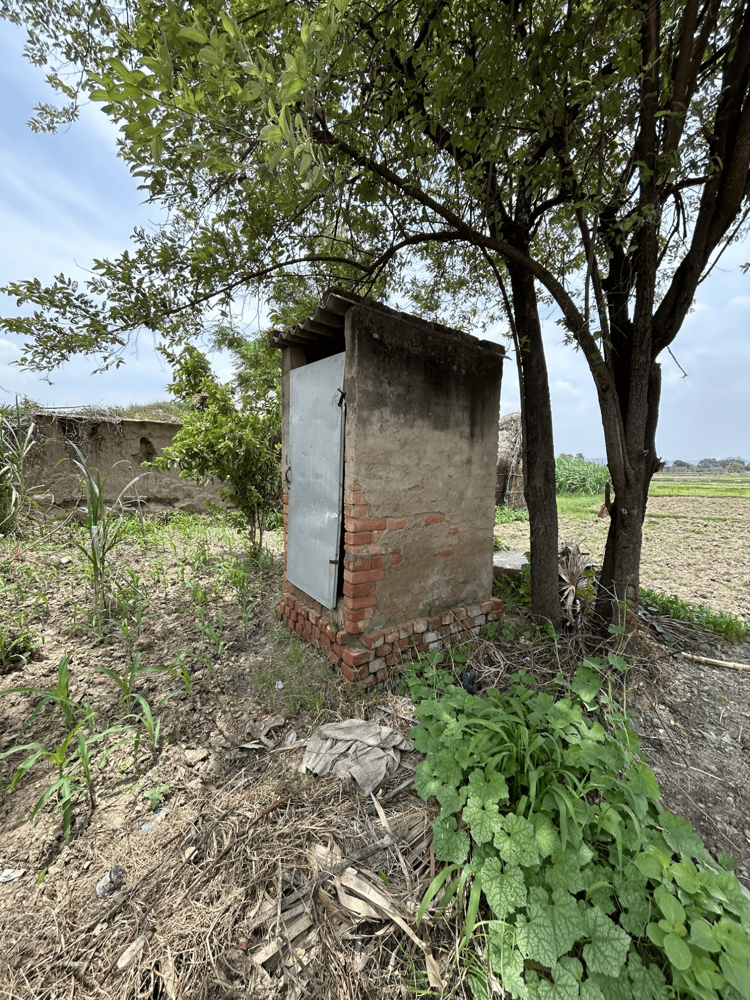
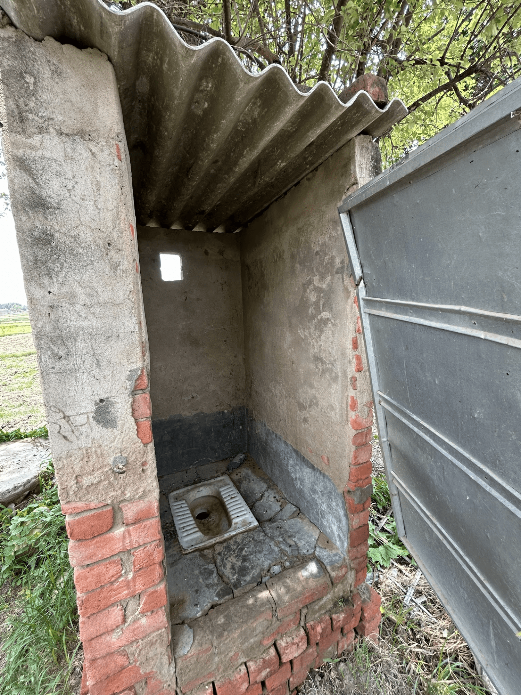
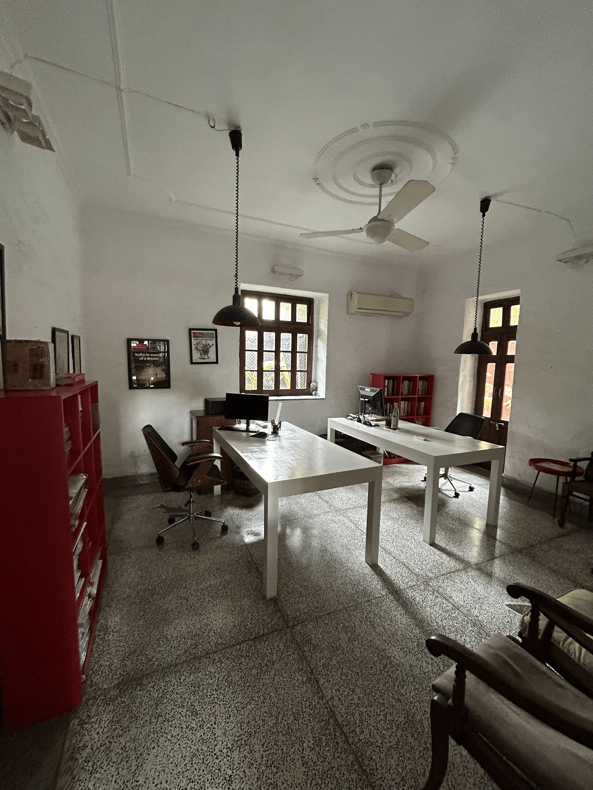
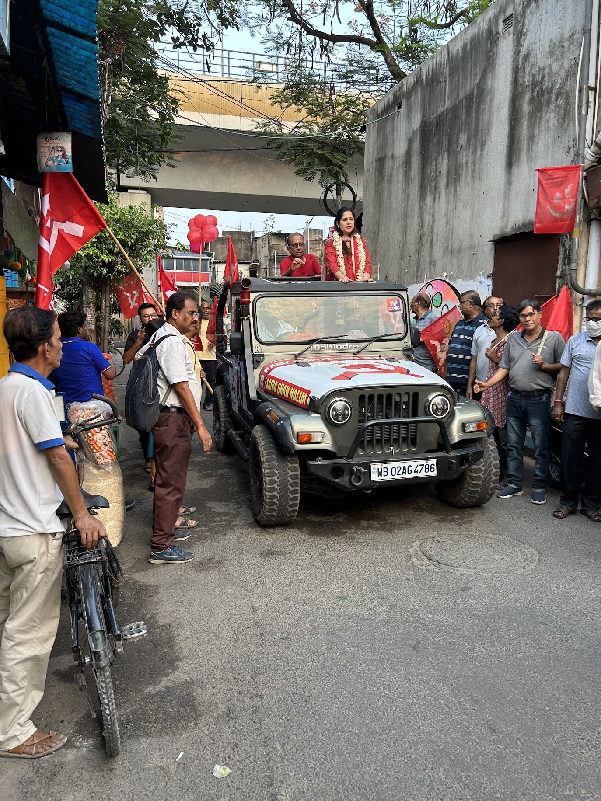
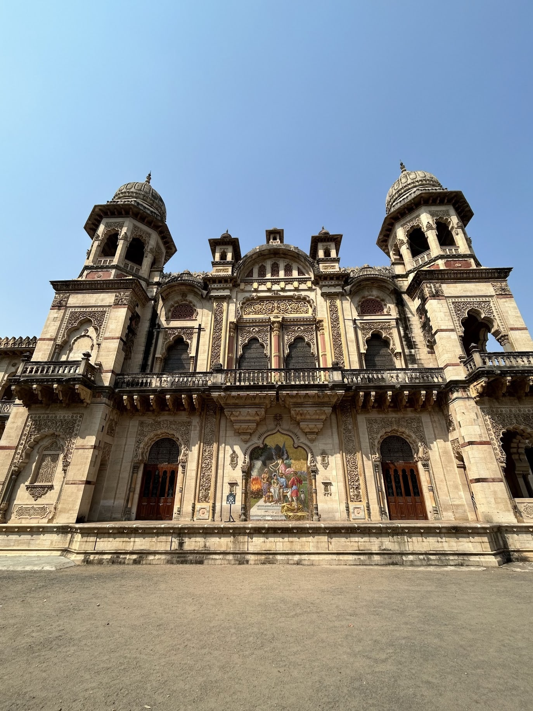
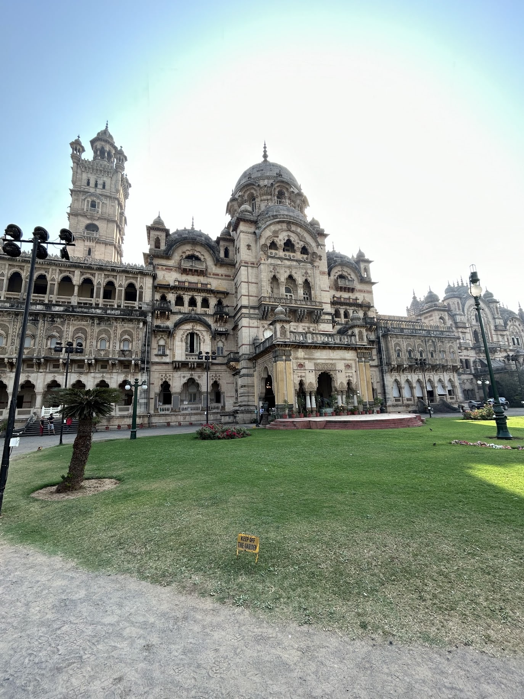

Religion: Young people in India are religious yet modern in a way that surprised me. Chamundeshwari temple in Mysore is one of India’s most beautiful places of worship (the city was one of the 550 princely states). My cab driver to the temple was a 26-year-old dude who knew perfect English. He was visiting the altar too, so became my companion. During the one-hour queue he described his religious devotion. (We could have paid a small fee to skip the line, as is common in many parts of India, but he thought that would be unfair.) He visited the temple twice weekly, but also that he was studying to become a police officer and had an unsanctioned girlfriend from a different caste; his parents didn’t know. “She’s much cuter than me,” he said.
A week later I visited Varanasi (Benares) in UP. Varanasi is India’s holiest city and an overwhelming sensory experience. The city is built around the Ganga (Ganges) River with ghats (stone steps) extending into the holy water. Every evening at sunset, there is a grand “Aarti”, a ceremony where large lamps are lit and slokas (hymns) are sung.
Varanasi is dear to Hindus. But it is also a fast-growing commercial enterprise that is causing overcrowding and eroding the city’s charm. If you go I recommend the Dashashwamedh ghat for the full experience. If you get claustrophobic you can pay a few hundred rupees to sit on a nearby rooftop. While there, I met a college student who visited every weekend. We discussed whether the Aarti would still be happening 100 years in the future, given the growing secularism of young people.

Dhashashwamedh Ghat at Varanasi
He responded with absolute certainty: “The old people are here for God but the younger people for [Instagram] Reels...maybe 50% Reels, 20% both, 30% God.” I asked about him. “I'm here for God…there are enough of us for this to continue,” he said. I think this is telling for the future. Enough highly religious people can keep traditions alive even for those who are not religious themselves. Indeed, 80% of Indians say religion is important to their daily lives, a number that has been pretty stable even while religiosity has declined in the West.
I am often asked what I think about Hindutva. In general, I hope India’s social fabric grows to be more pluralist (which is not the same as secular) and worry about the treatment of the Muslim minority. That said, there are interesting historical reasons for why Hindutva has grown to be a powerful social and political force. For example, the BJP claims that Nehru and Congress have erased the oppression of Hindus in the pre-British period from India’s history. There’s some truth to this. When Congress developed India’s educational system post-independence, they thought it best to paint the Mughal period as one of religious harmony to improve relations between Hindus and Muslims. Good intentions, but it’s unsurprising that people are not willing to gloss over the violence, just like Western progressives demand acknowledgement for past violence against minorities.
Villages: I asked a lot of people for advice about reporting on India. The most common suggestion was to venture outside cities for the villages, the “real India”, where over half the population lives and mostly works in agriculture. I spent some time at several villages in Eastern UP and Western Bihar, two of the poorest regions of India, partly because those areas (particularly UP) drove the surprising election swing. At one UP village, my first conversation was with the Pradhan (leader). Officially, they were supposed to be a woman. But a man, the Pradhan's husband, greeted me, as he de facto ran the show! Funnily enough, this is exactly like the opening scene of Panchayat, the popular Amazon Prime show about Indian village governance, which I highly recommend for understanding village life (it’s kind of like Indian Parks and Rec).
Most people I met in the UP and Bihari villages were not optimistic about the future. There were a few young men who had ambitions of moving to cities, but most were content to continue doing odd jobs, working part-time on farms. Mobile phones were common–the result of a rapid reduction in data and phone costs fueled by Ambani’s Jio–and there was typically one smartphone per household, usually controlled by the husband. Everyone was watching YouTube.
There was running water and toilets (another government programme) but people admitted open defecation was still common. The toilet-building programme, I was told, had a 20% skim i.e. the local officer in charge pocketed 20% of the construction subsidy given by the government. Government welfare (free ration of grain) meant no one starved. But amusingly, most villagers took their free unrefined and dusty grain and traded it back to the same distributor for a smaller portion of tastier refined grain!


A toilet built in Ramauli, one of the poorest parts of rural Bihar (<$1k GDP/capita) as part of the government’s Swachh Bharat (Clean India) mission. This village received a 12,000 rupee subsidy, with a local officer pocketing a 2,000 rupee skim. Open defecation has fallen, but not been eliminated.
Cities: The three most important cities in India are Delhi, Bangalore and Mumbai. There is an air of power and mystery to Delhi. My friend Roshan says you can tell how much political dealmaking is happening by counting how many people from opposing parties take walks on weekend mornings in Lodhi Gardens. Despite its pollution and poor usage of land, Lutyens’ Delhi is beautiful. Qutb Minar, Humayun’s tomb, Red Fort and Lodhi Gardens are especially stunning at night when they are brightly lit.

The Economist’s Delhi offices in Khan Market, the ultimate writer’s abode.
That said, Delhi culture is quite hierarchical (representing India writ large). In Washington, you routinely find people at top levels of government who come from regular backgrounds. In Delhi, that is rarer (Modi himself is an exception as the son of a tea-seller; partly explaining his broad-based popularity). Dynasties matter more. A large number of people remain devoted to the Gandhi-Nehru family despite their lack of political success over the past decade. London seems to fit in between in terms of the importance of class (while also being the smallest).
Bangalore, as I’ve said, is the SF of India. Mumbai, the financial capital, is most expats’ top city. It has the best nightlife, amazing food, the best houses and Bollywood. If you go, it’s worth seeing Dharavi, the world’s largest slum with around 1 million people. Dharavi, perhaps surprisingly, has a bustling $1bn mini-economy with thousands of micro-enterprises that supply the rest of the city snacks and leather (unofficially). Adani is redeveloping Dharavi, which is a major controversy. Many residents I met prefer their current setup to the high-rise apartments they are promised if the redevelopment goes forward. It’s an interesting case of progress clashing with community voice.
If I lived in India long term I would probably pick Bangalore or Delhi. I enjoyed the openness of the tech scene in Bangalore and a few of my closest friends in India live there. Delhi had the largest concentration of interesting writers and internationally-oriented thinkers, was full of gossip, and importantly, was the easiest to get around–you could simply do more activities in a given day.
Kolkata (Calcutta) and Chennai (Madras) are underrated for vastly different reasons. Calcutta, formerly the crown of the British empire, is on the economic decline. The state government was too communist for too long and business and young talent have fled. The city rests on the laurels of its cultural apex (count how long until a Cal resident reminds you of the poet Rabindranath Tagore), but even cultural production has shifted elsewhere. Yet the city has been lambasted so much it is now underrated. It is well-organised, not as crowded as India’s other metropolises, and the colonial architecture is beautiful and well-preserved. I highly recommend the INTACH heritage walk–you see the best sights, learn from very smart local historians about the city’s past, and also get a food tour (you can do INTACH walks all across India, which is also recommended).

Left: The Reserve Bank of India (RBI) building in Calcutta–seems fairly Soviet to me! Right: Fraternizing with the Communist Party of West Bengal
Chennai on the other hand is on the economic rise. It’s one of the most important cities for IT and tech and is also the capital of Tamil Nadu, the most successful southern state for manufacturing. Go one hour west of Chennai and you’ll arrive at Sriperumbudur, the centre of India’s efforts to be the “+1” in “China+1” and home of Foxconn India’s biggest plant. In Sriperumbudur I spoke to a lot of manufacturing workers–most were from other parts of the country and had moved for opportunity. Indian inter-state migration is weak, but it’s not zero. Further west is the City of a Thousand Temples, Kanchipuram, which is especially known for its Vishnu temples. The city is one of the best places in India to see a slice of history preserved close to its original state.
On several dimensions, I found quality of life in Mumbai, Delhi and Bangalore, the three places I spent the most time, was actually higher than in the US or UK. This is partly because labour-intensive services, like 10-minute delivery apps or having a personal cook, were more affordable due to the dollar’s purchasing power. India’s tier-1 cities also now have enough of an upper middle class to support a variety of restaurants, bars, concerts and clubs typical of global metropolises. If you’re in Mumbai, go to Bombay Canteen, one of my favourite restaurants in the world.
But the road to development is long. No city has a comprehensive metro system and pollution can get quite bad (especially in Delhi). As Rohit Krishnan recently wrote, “life in India is a series of bilateral negotiations.” From playing chicken in peak traffic to haggling over prices, many parts of Indian society are in the uncooperative equilibrium of the prisoner’s dilemma, raising the costs of daily life. 60-90% of roads do not have names and the ones that do are often non-standard, so you always have to 1.5x the Google Maps time estimate for any trip. Sometimes the costs of noncooperation are deadly. By my former colleague Leo Mirani’s count, over 80 lives have been lost in stampedes at religious sites in the first half of 2025. That is more than in the recent terrorist attacks in Kashmir that nearly caused a war between India and Pakistan.


Laxmi Vilas Palace in Baroda (Vadodara), a beautiful example of Indo-Saracenic architecture and the world’s largest private residence
Content: I read (skimmed) many books about India. Here are some of the best. In non-fiction, I recommend Guha’s “India after Gandhi” for the classic post-independence history. I appreciated Vinay Sitapati’s dual biography of Atal Bihari Vajpayee and L.K. Advani, the two leaders who made the modern BJP, “Jugalbandi”. I enjoyed even more his biography of P.V. Narasimha Rao, the Congress leader who liberalised India as PM from 1991-96, “Half-Lion”. Rao in particular should be better-known globally. He is almost on par with Deng Xiaoping in history’s rankings for poverty reduction. The Congress Party, due to infighting, has unfortunately diminished his contributions.
To understand corruption and crime in India, read “When Crime Pays” by Milan Vaishnav for an academic but still engaging treatment. In “Billionaire Raj”, James Crabtree, then the FT’s Mumbai Bureau Chief, gives you a look inside the business and political dealings of India’s biggest tycoons based on his five years reporting from Mumbai–it’s quite funny and engaging throughout. Josy Joseph’s “A Feast of Vultures” looks at the middlemen who grease the wheels of the business-politics nexus. It is a superstar work of investigative journalism.
For economics memoirs, I recommend Montek Singh Ahluwalia’s “Backstage” and Arvind Subramanian’s “Of Counsel”. Both take you inside the room of some of India’s most consequential economic policymaking periods–liberalisation in the 90s for Montek and Modi’s first term for Subramanian. For how India should approach the future, I suggest Karthik Muralidharan’s “Accelerating India’s Development” and Raghuram Rajan and Rohit Lamba’s “Breaking the Mould”, both of which I reviewed. For fiction, check out Deepti Kapoor’s “Age of Vice”. It is gripping and useful context for those wondering about the culture of goondas, money and power politics. Finally, Salman Rushdie’s “Midnight’s Children”, one of the great works of modern fiction.
Economic discourse in India primarily occurs in newspaper op-ed pages, including Mint, Business Standard, The Economic Times, The Indian Express, The Hindustan Times and The Hindu. The newsletter/podcast scene is less built out than China’s. But a few I enjoy include Milan Vaishnav’s Grand Tamasha, Shruthi Rajagopalan’s newsletter and podcast Ideas of India (I went on last May), Ajay Shah’s newsletter, Amit Varma’s podcast The Seen and Unseen, The Economist’s Essential India newsletter, Rohan Venkat’s India Inside Out, and Pranay Kotasthane’s Anticipating the Unintended (the Takshashila Institution is generally strong). Aaryaman Vir and Rahul Sanghi’s Tigerfeathers has deep dives into Indian tech. Marcellus Advisors also has great research notes.
India Link Weekly had an excellent weekly roundup of links but stopped publishing last year sadly. (Someone should restart this!)
The Indian diaspora (and why it's so successful): The Indian Institutes of Technology (IITs, established 1950) and Indian Institutes of Management (IIMs, established 1961), are the exemplars of India’s historical focus on elite education. They are also major reasons why India produces a small slice of elite human capital that is disproportionately represented at the top of corporate and political America.
But to me the most interesting question is why Indian Americans seem to have outperformed other successful diasporas, especially Chinese Americans. To be clear I am specifically talking about the very top of the distribution i.e. CEOs, major politicians, etc. My grandfather, a retired IAS officer who negotiated arms deals with the Soviet Union and chaired the Bombay Stock Exchange, likes to say the British Empire left India with four gifts: the English language, parliamentary democracy, cricket and railroads. I think the first two, along with a long history of oral persuasion, explain a big part of Indian Americans’ success. In India, oral persuasion, in English, is necessary for success. In China, an exam-based culture where politics and business is conducted in Mandarin is less exportable to the American context.